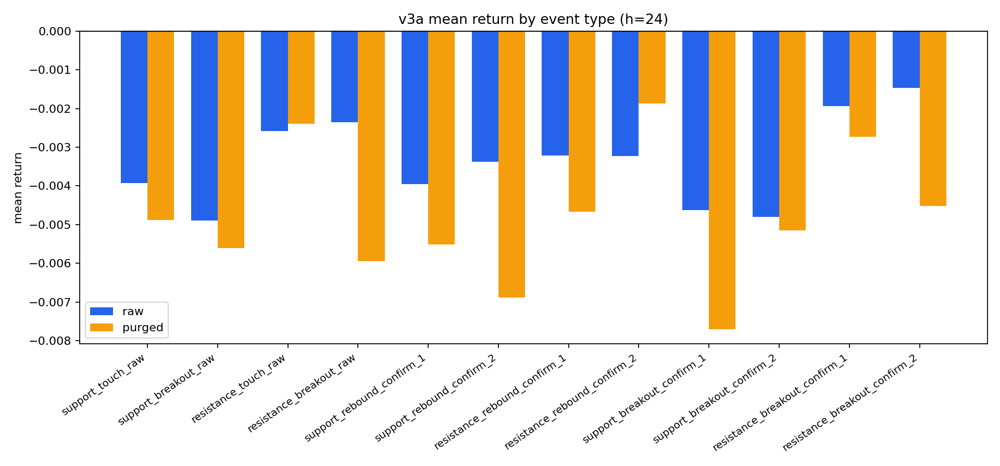
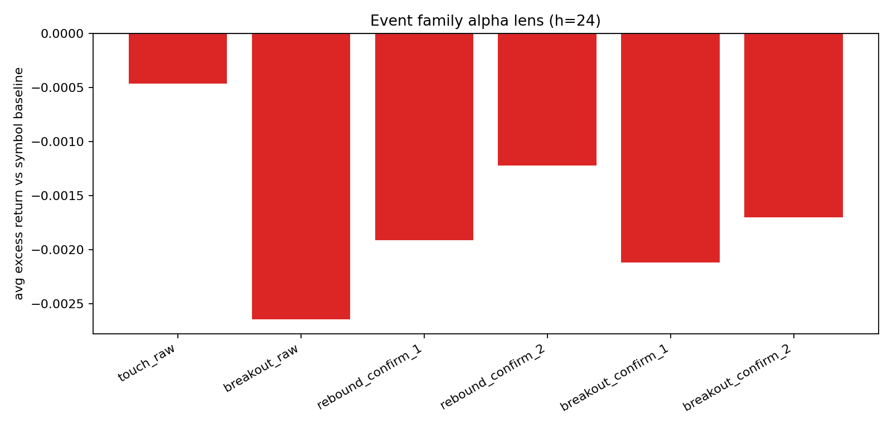

核心目标：研究“当时已可见 line 上的事件”是否能预测未来收益，同时尽量避免未来函数。
v3a 边界：首版采用 stepwise visible snapshots（每 24 根 bar 重算一次可见线）以平衡计算量；后续可升级为更细粒度 as-of 引擎。
一句人话总结：这轮 180d 长样本里，breakout short 还没死，但已经比短样本看上去弱了很多；rebound long 也还没有站稳成可直接 headline 的多头 alpha。
这个区块专门回答“长样本是在强化原来的判断，还是在拆穿短样本幻觉”。如果一个现象在 120d 很好看、到 180d 却明显变弱或翻负，那通常更像样本期 lucky hit，而不是稳健 alpha。
| family | h24_excess_120d | h24_excess_180d | delta_long_minus_120d | reading |
|---|---|---|---|---|
| breakout_raw | -0.007302 | -0.002645 | 0.004657 | 长样本里更弱 |
| breakout_confirm_1 | -0.001881 | -0.002120 | -0.000239 | 长样本里更强或方向翻转 |
| breakout_confirm_2 | -0.004078 | -0.001700 | 0.002378 | 长样本里更弱 |
| rebound_confirm_1 | -0.004198 | -0.001912 | 0.002286 | 长样本里更弱 |
| rebound_confirm_2 | -0.004747 | -0.001225 | 0.003522 | 长样本里更弱 |
| touch_raw | -0.007126 | -0.000464 | 0.006662 | 长样本里更弱 |
| event_type | h24_excess_120d | h24_excess_180d | delta_long_minus_120d | reading |
|---|---|---|---|---|
| support_breakout_raw | -0.010106 | -0.002491 | 0.007614 | 仍为负，但长样本里明显变弱 |
| support_breakout_confirm_1 | -0.008668 | -0.004665 | 0.004003 | 仍为负，但长样本里明显变弱 |
| support_breakout_confirm_2 | -0.009999 | -0.002020 | 0.007979 | 仍为负，但长样本里明显变弱 |
| resistance_breakout_confirm_1 | 0.004438 | 0.000415 | -0.004023 | 长样本里转成相对偏强/抗跌 |
| resistance_breakout_confirm_2 | 0.001185 | -0.001387 | -0.002572 | 短样本里看着偏强，但长样本里消退/翻负 |
| support_rebound_confirm_1 | -0.003749 | -0.002285 | 0.001464 | 仍为负，但长样本里明显变弱 |
| resistance_rebound_confirm_2 | -0.003041 | 0.001287 | 0.004328 | 长样本里转成相对偏强/抗跌 |
breakout_raw 的 h24 excess 从 -1.01%（这里只看 support_raw 事件层的代表行）到 -0.25%。翻成人话：负向方向还在，但强度没短样本看起来那么夸张。support_breakout_confirm_1 在 180d 里仍保持负 excess（-0.47%），但也比 120d 更保守。support_rebound_confirm_1 在 180d 里仍没有转成干净正 excess（当前约 -0.23%），所以更合理的身份还是 watchlist，而不是正式多头 alpha。如果完全不挑事件，只在同一时期随机拿 action time 看未来收益，市场本来是什么样。事件只有明显优于/劣于这个基线，才更像 alpha。
| symbol | horizon | baseline_mean | baseline_median | baseline_up_ratio | eligible |
|---|---|---|---|---|---|
| BTC-USD | 24 | -0.002496 | -0.001172 | 0.470644 | 4241 |
| ETH-USD | 24 | -0.003772 | -0.001390 | 0.478661 | 4241 |
| SOL-USD | 24 | -0.004846 | -0.002960 | 0.459345 | 4243 |
| BNB-USD | 24 | -0.001491 | 0.000073 | 0.501060 | 4245 |
这张表把绝对收益、相对基线 excess、跨资产一致性合在一起看，帮助判断哪些事件更值得进入 baseline 池。
| candidate | lens | status | why | events | h24_mean_ret | h24_avg_excess_ret | symbol_consistency |
|---|---|---|---|---|---|---|---|
| support breakout confirm_2 | short candidate | keep | 24h 绝对收益和相对基线都显著偏负；和 breakout family 结论一致。 | 199 | -0.005152 | -0.002020 | 3/4 negative-excess |
| confirmed breakout family (2-bar confirm) | short / continuation | keep | 24h 下绝对收益最差，且相对同周期无条件基线也更差。 | 402 | -0.004833 | -0.001700 | 3/4 negative-excess |
| support rebound confirm_1 | best long candidate so far | watch | 当前更像多头观察候选：相对基线略强，但绝对收益还不够强，样本也不大。 | 215 | -0.005518 | -0.002285 | 1/4 positive-excess |
| rebound family (1-bar confirm) | relative long / mean reversion | watch | 相对基线有正 excess，但绝对收益并不强，说明更像抗跌而不是强上涨。 | 430 | -0.005095 | -0.001912 | 1/4 positive-excess |
重要 caveat：当前 breakout 的 support / resistance 两侧结果不能直接当成独立 alpha 结论。A 类审计已经说明：breakout side 的几何 / 归属还没完全 clean，所以更稳的解释仍应先落在 breakout family 层面。对应审计见：breakout side audit；对其中“100% inversion”指标的纠偏复核见：breakout metric re-audit。
这张小结只读当前 v3 主页面的 180d / 4-asset / h=24 artifacts，再结合 A 类审计，回答“现在能不能把两边当成不同信号”。
| family | support_events | resistance_events | support_h24_avg_excess_ret | resistance_h24_avg_excess_ret | support_minus_resistance | reading | reliability |
|---|---|---|---|---|---|---|---|
| breakout_raw | 208 | 213 | -0.002491 | -0.002787 | 0.000296 | 数字上 support 更弱 / 更偏空；但 breakout side 审计还没 clean，先只按 family-level 看。 | breakout 数字差异: low_to_medium；不宜独立解读: high |
| breakout_confirm_1 | 206 | 206 | -0.004665 | 0.000415 | -0.005080 | 数字上 support 更弱 / 更偏空；但 breakout side 审计还没 clean，先只按 family-level 看。 | breakout 数字差异: low_to_medium；不宜独立解读: high |
| breakout_confirm_2 | 199 | 203 | -0.002020 | -0.001387 | -0.000634 | 数字上 support 更弱 / 更偏空；但 breakout side 审计还没 clean，先只按 family-level 看。 | breakout 数字差异: low_to_medium；不宜独立解读: high |
| rebound_confirm_1 | 215 | 215 | -0.002285 | -0.001485 | -0.000800 | 当前是 resistance 略强，但这还不等于已经形成稳定单边优势。 | medium |
| rebound_confirm_2 | 209 | 213 | -0.003745 | 0.001287 | -0.005032 | 当前是 resistance 略强，但这还不等于已经形成稳定单边优势。 | medium |
confirm_1，support 相对基线略强；但到 confirm_2，反而是 resistance 略强。所以现在更诚实的说法是“rebound 对 side 有点敏感”，还不是“哪一边已经稳赢”。confirm_1 和 confirm_2 都稳定胜出的单边。最短答案：旧版采样器把“已经站到错误一侧的线”也继续当成 breakout 候选，而且 breakout 更像“当前处在突破状态”而不是“这一根 bar 才刚发生穿越”。这样一来，同一根 bar 就可能被同时记成 support breakout 和 resistance breakout。
| sample | family | exact_mirrored_pairs | support_above_resistance_share |
|---|---|---|---|
| raw | breakout_raw | 0 | |
| raw | breakout_confirm_1 | 0 | |
| raw | breakout_confirm_2 | 0 | |
| purged | breakout_raw | 0 | |
| purged | breakout_confirm_1 | 0 | |
| purged | breakout_confirm_2 | 0 |
symbol + event/confirm/action timestamps，确实可能同时留下 support breakout 与 resistance breakout 两条记录。这是给读者的 plain-language 摘要：只基于当前 v3 主报告（180d、4 个资产、主观察窗 h=24）的结果，不把后续 OOS 扩展或更长样本的判断提前混进来。
confirmed breakout family 仍是当前最像的负向主候选。按当前主页口径，breakout_confirm_2 在 h=24 的 family-level 平均收益约 -0.48%，相对同段基线的平均 excess 约 -0.17%。翻成人话：它更像“后面 24 小时继续走弱”的候选，而不是反转做多信号。可靠度：medium。support_rebound_confirm_1 仍可先留在多头观察名单里，但级别只能算 weak watch。它的 h=24 相对基线 excess 约 -0.23%，绝对平均收益约 -0.55%。翻成人话：这不是“已经找到 long alpha”，而是“在 rebound 线里暂时还没被完全排除”的候选。可靠度：low_to_medium。support breakout 和 resistance breakout 已经是两条可分开交易的独立 alpha。A 类审计仍提示：breakout 的 side 几何 / 归属问题需要继续严审，所以当前最稳的解读单位仍是 family，不是单边标签。可靠度：high。
先看 raw 与 purged 的差别，确认结果不是仅靠重叠事件堆出来的。

这张图更接近 alpha 视角：正值代表“比无条件基线更强”，负值代表“比基线更弱”。
| event_family | horizon | events | mean_ret | median_ret | up_ratio | baseline_mean_avg | avg_excess_ret | pos_symbols_excess | neg_symbols_excess | zero_symbols_excess | consistency |
|---|---|---|---|---|---|---|---|---|---|---|---|
| touch_raw | 6 | 433 | 0.000106 | -0.000175 | 0.498845 | -0.000883 | 0.000995 | 3 | 1 | 0 | 0.75 |
| touch_raw | 24 | 433 | -0.003639 | -0.001644 | 0.464203 | -0.003151 | -0.000464 | 1 | 3 | 0 | 0.75 |
| touch_raw | 48 | 433 | -0.010064 | -0.003401 | 0.452656 | -0.006396 | -0.003671 | 0 | 4 | 0 | 1.00 |
| touch_raw | 72 | 433 | -0.011159 | -0.011235 | 0.441109 | -0.009984 | -0.001200 | 0 | 4 | 0 | 1.00 |
| breakout_raw | 6 | 421 | 0.000020 | 0.001186 | 0.539192 | -0.000883 | 0.000906 | 3 | 1 | 0 | 0.75 |
| breakout_raw | 24 | 421 | -0.005777 | -0.001286 | 0.477435 | -0.003151 | -0.002645 | 0 | 4 | 0 | 1.00 |
| breakout_raw | 48 | 421 | -0.010074 | -0.009459 | 0.427553 | -0.006396 | -0.003701 | 0 | 4 | 0 | 1.00 |
| breakout_raw | 72 | 421 | -0.011795 | -0.006555 | 0.448931 | -0.009984 | -0.001838 | 0 | 4 | 0 | 1.00 |
| rebound_confirm_1 | 6 | 430 | -0.000019 | 0.000455 | 0.506977 | -0.000883 | 0.000880 | 3 | 1 | 0 | 0.75 |
| rebound_confirm_1 | 24 | 430 | -0.005095 | -0.001436 | 0.479070 | -0.003151 | -0.001912 | 1 | 3 | 0 | 0.75 |
| rebound_confirm_1 | 48 | 430 | -0.010175 | -0.005430 | 0.441860 | -0.006396 | -0.003778 | 0 | 4 | 0 | 1.00 |
| rebound_confirm_1 | 72 | 430 | -0.011559 | -0.010935 | 0.430233 | -0.009984 | -0.001610 | 0 | 4 | 0 | 1.00 |
| rebound_confirm_2 | 6 | 422 | -0.001493 | 0.000001 | 0.500000 | -0.000883 | -0.000617 | 1 | 3 | 0 | 0.75 |
| rebound_confirm_2 | 24 | 422 | -0.004352 | -0.001619 | 0.481043 | -0.003151 | -0.001225 | 2 | 2 | 0 | 0.50 |
| rebound_confirm_2 | 48 | 422 | -0.010071 | -0.006578 | 0.426540 | -0.006396 | -0.003705 | 0 | 4 | 0 | 1.00 |
| rebound_confirm_2 | 72 | 422 | -0.011660 | -0.008568 | 0.431280 | -0.009984 | -0.001696 | 1 | 3 | 0 | 0.75 |
| breakout_confirm_1 | 6 | 412 | 0.000247 | -0.000547 | 0.485437 | -0.000883 | 0.001120 | 4 | 0 | 0 | 1.00 |
| breakout_confirm_1 | 24 | 412 | -0.005218 | -0.002845 | 0.451456 | -0.003151 | -0.002120 | 1 | 3 | 0 | 0.75 |
| breakout_confirm_1 | 48 | 412 | -0.006683 | -0.003959 | 0.441748 | -0.006396 | -0.000331 | 2 | 2 | 0 | 0.50 |
| breakout_confirm_1 | 72 | 412 | -0.011138 | -0.009287 | 0.449029 | -0.009984 | -0.001213 | 2 | 2 | 0 | 0.50 |
| breakout_confirm_2 | 6 | 402 | 0.000294 | 0.000636 | 0.537313 | -0.000883 | 0.001166 | 3 | 1 | 0 | 0.75 |
| breakout_confirm_2 | 24 | 402 | -0.004833 | -0.004115 | 0.447761 | -0.003151 | -0.001700 | 1 | 3 | 0 | 0.75 |
| breakout_confirm_2 | 48 | 402 | -0.007976 | -0.005671 | 0.440299 | -0.006396 | -0.001604 | 1 | 3 | 0 | 0.75 |
| breakout_confirm_2 | 72 | 402 | -0.010895 | -0.009284 | 0.440299 | -0.009984 | -0.000936 | 1 | 3 | 0 | 0.75 |
| event_type | horizon | events | mean_ret | median_ret | up_ratio | baseline_mean_avg | avg_excess_ret | pos_symbols_excess | neg_symbols_excess | zero_symbols_excess | consistency |
|---|---|---|---|---|---|---|---|---|---|---|---|
| support_touch_raw | 6 | 216 | 0.001027 | 0.000377 | 0.504630 | -0.000883 | 0.001902 | 3 | 1 | 0 | 0.75 |
| support_touch_raw | 24 | 216 | -0.004887 | -0.002275 | 0.439815 | -0.003151 | -0.001706 | 1 | 3 | 0 | 0.75 |
| support_touch_raw | 48 | 216 | -0.009692 | -0.004910 | 0.444444 | -0.006396 | -0.003297 | 0 | 4 | 0 | 1.00 |
| support_touch_raw | 72 | 216 | -0.012036 | -0.013181 | 0.430556 | -0.009984 | -0.002079 | 0 | 4 | 0 | 1.00 |
| support_breakout_raw | 6 | 208 | 0.001226 | 0.001950 | 0.557692 | -0.000883 | 0.002096 | 4 | 0 | 0 | 1.00 |
| support_breakout_raw | 24 | 208 | -0.005605 | -0.000763 | 0.495192 | -0.003151 | -0.002491 | 1 | 3 | 0 | 0.75 |
| support_breakout_raw | 48 | 208 | -0.010453 | -0.010499 | 0.423077 | -0.006396 | -0.004114 | 1 | 3 | 0 | 0.75 |
| support_breakout_raw | 72 | 208 | -0.012045 | -0.007911 | 0.437500 | -0.009984 | -0.002113 | 0 | 4 | 0 | 1.00 |
| resistance_touch_raw | 6 | 217 | -0.000811 | -0.000323 | 0.493088 | -0.000883 | 0.000090 | 2 | 2 | 0 | 0.50 |
| resistance_touch_raw | 24 | 217 | -0.002397 | -0.000354 | 0.488479 | -0.003151 | 0.000783 | 2 | 2 | 0 | 0.50 |
| resistance_touch_raw | 48 | 217 | -0.010435 | -0.002240 | 0.460829 | -0.006396 | -0.004041 | 1 | 3 | 0 | 0.75 |
| resistance_touch_raw | 72 | 217 | -0.010287 | -0.007870 | 0.451613 | -0.009984 | -0.000325 | 2 | 2 | 0 | 0.50 |
| resistance_breakout_raw | 6 | 213 | -0.001157 | 0.000419 | 0.521127 | -0.000883 | -0.000269 | 1 | 3 | 0 | 0.75 |
| resistance_breakout_raw | 24 | 213 | -0.005946 | -0.001739 | 0.460094 | -0.003151 | -0.002787 | 1 | 3 | 0 | 0.75 |
| resistance_breakout_raw | 48 | 213 | -0.009704 | -0.006454 | 0.431925 | -0.006396 | -0.003310 | 0 | 4 | 0 | 1.00 |
| resistance_breakout_raw | 72 | 213 | -0.011552 | -0.003623 | 0.460094 | -0.009984 | -0.001574 | 1 | 3 | 0 | 0.75 |
| support_rebound_confirm_1 | 6 | 215 | 0.001056 | 0.001140 | 0.530233 | -0.000883 | 0.001957 | 3 | 1 | 0 | 0.75 |
| support_rebound_confirm_1 | 24 | 215 | -0.005518 | -0.002449 | 0.469767 | -0.003151 | -0.002285 | 1 | 3 | 0 | 0.75 |
| support_rebound_confirm_1 | 48 | 215 | -0.008446 | -0.006157 | 0.437209 | -0.006396 | -0.002026 | 2 | 2 | 0 | 0.50 |
| support_rebound_confirm_1 | 72 | 215 | -0.011834 | -0.010837 | 0.409302 | -0.009984 | -0.001894 | 1 | 3 | 0 | 0.75 |
| support_rebound_confirm_2 | 6 | 209 | -0.000998 | -0.000019 | 0.497608 | -0.000883 | -0.000142 | 1 | 3 | 0 | 0.75 |
| support_rebound_confirm_2 | 24 | 209 | -0.006883 | -0.002445 | 0.478469 | -0.003151 | -0.003745 | 1 | 3 | 0 | 0.75 |
| support_rebound_confirm_2 | 48 | 209 | -0.013059 | -0.008496 | 0.397129 | -0.006396 | -0.006710 | 0 | 4 | 0 | 1.00 |
| support_rebound_confirm_2 | 72 | 209 | -0.013118 | -0.010814 | 0.401914 | -0.009984 | -0.003180 | 0 | 4 | 0 | 1.00 |
| resistance_rebound_confirm_1 | 6 | 215 | -0.001095 | -0.000602 | 0.483721 | -0.000883 | -0.000188 | 2 | 2 | 0 | 0.50 |
| resistance_rebound_confirm_1 | 24 | 215 | -0.004673 | -0.000824 | 0.488372 | -0.003151 | -0.001485 | 1 | 3 | 0 | 0.75 |
| resistance_rebound_confirm_1 | 48 | 215 | -0.011904 | -0.004619 | 0.446512 | -0.006396 | -0.005503 | 0 | 4 | 0 | 1.00 |
| resistance_rebound_confirm_1 | 72 | 215 | -0.011285 | -0.011291 | 0.451163 | -0.009984 | -0.001320 | 0 | 4 | 0 | 1.00 |
| resistance_rebound_confirm_2 | 6 | 213 | -0.001979 | 0.000021 | 0.502347 | -0.000883 | -0.001093 | 2 | 2 | 0 | 0.50 |
| resistance_rebound_confirm_2 | 24 | 213 | -0.001868 | -0.001171 | 0.483568 | -0.003151 | 0.001287 | 2 | 2 | 0 | 0.50 |
| resistance_rebound_confirm_2 | 48 | 213 | -0.007140 | -0.003348 | 0.455399 | -0.006396 | -0.000740 | 1 | 3 | 0 | 0.75 |
| resistance_rebound_confirm_2 | 72 | 213 | -0.010229 | -0.002650 | 0.460094 | -0.009984 | -0.000252 | 1 | 3 | 0 | 0.75 |
| support_breakout_confirm_1 | 6 | 206 | -0.000367 | -0.000614 | 0.480583 | -0.000883 | 0.000505 | 3 | 1 | 0 | 0.75 |
| support_breakout_confirm_1 | 24 | 206 | -0.007700 | -0.003786 | 0.446602 | -0.003151 | -0.004665 | 1 | 3 | 0 | 0.75 |
| support_breakout_confirm_1 | 48 | 206 | -0.007161 | -0.005575 | 0.427184 | -0.006396 | -0.000875 | 2 | 2 | 0 | 0.50 |
| support_breakout_confirm_1 | 72 | 206 | -0.010853 | -0.011493 | 0.427184 | -0.009984 | -0.000949 | 2 | 2 | 0 | 0.50 |
| support_breakout_confirm_2 | 6 | 199 | 0.000751 | 0.000968 | 0.567839 | -0.000883 | 0.001623 | 3 | 1 | 0 | 0.75 |
| support_breakout_confirm_2 | 24 | 199 | -0.005152 | -0.002175 | 0.472362 | -0.003151 | -0.002020 | 1 | 3 | 0 | 0.75 |
| support_breakout_confirm_2 | 48 | 199 | -0.010309 | -0.009539 | 0.427136 | -0.006396 | -0.003940 | 0 | 4 | 0 | 1.00 |
| support_breakout_confirm_2 | 72 | 199 | -0.012324 | -0.013150 | 0.402010 | -0.009984 | -0.002365 | 0 | 4 | 0 | 1.00 |
| resistance_breakout_confirm_1 | 6 | 206 | 0.000861 | -0.000315 | 0.490291 | -0.000883 | 0.001731 | 4 | 0 | 0 | 1.00 |
| resistance_breakout_confirm_1 | 24 | 206 | -0.002736 | -0.002773 | 0.456311 | -0.003151 | 0.000415 | 1 | 3 | 0 | 0.75 |
| resistance_breakout_confirm_1 | 48 | 206 | -0.006205 | -0.002861 | 0.456311 | -0.006396 | 0.000198 | 2 | 2 | 0 | 0.50 |
| resistance_breakout_confirm_1 | 72 | 206 | -0.011423 | -0.005433 | 0.470874 | -0.009984 | -0.001479 | 1 | 3 | 0 | 0.75 |
| resistance_breakout_confirm_2 | 6 | 203 | -0.000155 | 0.000080 | 0.507389 | -0.000883 | 0.000719 | 1 | 3 | 0 | 0.75 |
| resistance_breakout_confirm_2 | 24 | 203 | -0.004522 | -0.005610 | 0.423645 | -0.003151 | -0.001387 | 1 | 3 | 0 | 0.75 |
| resistance_breakout_confirm_2 | 48 | 203 | -0.005688 | -0.004125 | 0.453202 | -0.006396 | 0.000686 | 2 | 2 | 0 | 0.50 |
| resistance_breakout_confirm_2 | 72 | 203 | -0.009494 | -0.001890 | 0.477833 | -0.009984 | 0.000466 | 3 | 1 | 0 | 0.75 |
| event_type | events | mean_ret | median_ret | up_ratio | horizon | confidence_tier | direction_label |
|---|---|---|---|---|---|---|---|
| support_touch_raw | 8246 | -0.000877 | 0.000200 | 0.508004 | 6 | high | mixed |
| support_touch_raw | 8246 | -0.003923 | -0.001083 | 0.479990 | 24 | high | mixed |
| support_touch_raw | 8246 | -0.007864 | -0.004382 | 0.454523 | 48 | high | mixed |
| support_touch_raw | 8246 | -0.010252 | -0.007975 | 0.448945 | 72 | high | more_likely_down |
| support_breakout_raw | 4184 | -0.001287 | 0.000235 | 0.507648 | 6 | high | mixed |
| support_breakout_raw | 4184 | -0.004898 | -0.002100 | 0.466300 | 24 | high | mixed |
| support_breakout_raw | 4184 | -0.009100 | -0.005552 | 0.448853 | 48 | high | more_likely_down |
| support_breakout_raw | 4184 | -0.010228 | -0.007753 | 0.449809 | 72 | high | more_likely_down |
| resistance_touch_raw | 8393 | -0.001010 | -0.000216 | 0.490051 | 6 | high | mixed |
| resistance_touch_raw | 8393 | -0.002578 | -0.000909 | 0.483736 | 24 | high | mixed |
| resistance_touch_raw | 8393 | -0.006096 | -0.002575 | 0.472060 | 48 | high | mixed |
| resistance_touch_raw | 8393 | -0.009336 | -0.006802 | 0.455499 | 72 | high | mixed |
| resistance_breakout_raw | 4314 | -0.000611 | -0.000511 | 0.478674 | 6 | high | mixed |
| resistance_breakout_raw | 4314 | -0.002350 | -0.001420 | 0.476588 | 24 | high | mixed |
| resistance_breakout_raw | 4314 | -0.006515 | -0.003221 | 0.461521 | 48 | high | mixed |
| resistance_breakout_raw | 4314 | -0.010618 | -0.008507 | 0.446453 | 72 | high | more_likely_down |
| support_rebound_confirm_1 | 5551 | -0.000888 | 0.000041 | 0.502072 | 6 | high | mixed |
| support_rebound_confirm_1 | 5551 | -0.003960 | -0.001098 | 0.480634 | 24 | high | mixed |
| support_rebound_confirm_1 | 5551 | -0.007881 | -0.004434 | 0.452531 | 48 | high | mixed |
| support_rebound_confirm_1 | 5551 | -0.011142 | -0.008824 | 0.441542 | 72 | high | more_likely_down |
| support_rebound_confirm_2 | 4520 | -0.000676 | 0.000031 | 0.500885 | 6 | high | mixed |
| support_rebound_confirm_2 | 4520 | -0.003371 | -0.000735 | 0.484956 | 24 | high | mixed |
| support_rebound_confirm_2 | 4520 | -0.007519 | -0.004116 | 0.456858 | 48 | high | mixed |
| support_rebound_confirm_2 | 4520 | -0.010929 | -0.008294 | 0.447566 | 72 | high | more_likely_down |
| resistance_rebound_confirm_1 | 5393 | -0.001481 | -0.000234 | 0.490080 | 6 | high | mixed |
| resistance_rebound_confirm_1 | 5393 | -0.003211 | -0.001284 | 0.478954 | 24 | high | mixed |
| resistance_rebound_confirm_1 | 5393 | -0.006593 | -0.003542 | 0.464491 | 48 | high | mixed |
| resistance_rebound_confirm_1 | 5393 | -0.009631 | -0.008054 | 0.451511 | 72 | high | mixed |
| resistance_rebound_confirm_2 | 4271 | -0.001443 | -0.000174 | 0.491922 | 6 | high | mixed |
| resistance_rebound_confirm_2 | 4271 | -0.003222 | -0.001341 | 0.477640 | 24 | high | mixed |
| resistance_rebound_confirm_2 | 4271 | -0.006351 | -0.003542 | 0.460314 | 48 | high | mixed |
| resistance_rebound_confirm_2 | 4271 | -0.009516 | -0.007802 | 0.449543 | 72 | high | more_likely_down |
| support_breakout_confirm_1 | 3129 | -0.001006 | 0.000276 | 0.509428 | 6 | high | mixed |
| support_breakout_confirm_1 | 3129 | -0.004627 | -0.002204 | 0.468201 | 24 | high | mixed |
| support_breakout_confirm_1 | 3129 | -0.008442 | -0.005065 | 0.451582 | 48 | high | mixed |
| support_breakout_confirm_1 | 3129 | -0.010253 | -0.007870 | 0.448706 | 72 | high | more_likely_down |
| support_breakout_confirm_2 | 2657 | -0.000730 | 0.000623 | 0.519759 | 6 | high | mixed |
| support_breakout_confirm_2 | 2657 | -0.004805 | -0.001967 | 0.464810 | 24 | high | mixed |
| support_breakout_confirm_2 | 2657 | -0.008119 | -0.004215 | 0.457659 | 48 | high | mixed |
| support_breakout_confirm_2 | 2657 | -0.009475 | -0.006620 | 0.456154 | 72 | high | mixed |
| resistance_breakout_confirm_1 | 3213 | -0.000583 | -0.000508 | 0.475879 | 6 | high | mixed |
| resistance_breakout_confirm_1 | 3213 | -0.001939 | -0.001229 | 0.480859 | 24 | high | mixed |
| resistance_breakout_confirm_1 | 3213 | -0.006203 | -0.002500 | 0.475879 | 48 | high | mixed |
| resistance_breakout_confirm_1 | 3213 | -0.010382 | -0.007796 | 0.448491 | 72 | high | more_likely_down |
| resistance_breakout_confirm_2 | 2725 | -0.000293 | -0.000539 | 0.475963 | 6 | high | mixed |
| resistance_breakout_confirm_2 | 2725 | -0.001467 | -0.000724 | 0.488073 | 24 | high | mixed |
| resistance_breakout_confirm_2 | 2725 | -0.005655 | -0.002386 | 0.474495 | 48 | high | mixed |
| resistance_breakout_confirm_2 | 2725 | -0.010019 | -0.007225 | 0.453945 | 72 | high | mixed |
| event_type | events | mean_ret | median_ret | up_ratio | horizon | confidence_tier | direction_label |
|---|---|---|---|---|---|---|---|
| support_touch_raw | 216 | 0.001027 | 0.000377 | 0.504630 | 6 | medium | mixed |
| support_touch_raw | 216 | -0.004887 | -0.002275 | 0.439815 | 24 | medium | more_likely_down |
| support_touch_raw | 216 | -0.009692 | -0.004910 | 0.444444 | 48 | medium | more_likely_down |
| support_touch_raw | 216 | -0.012036 | -0.013181 | 0.430556 | 72 | medium | more_likely_down |
| support_breakout_raw | 208 | 0.001226 | 0.001950 | 0.557692 | 6 | medium | more_likely_up |
| support_breakout_raw | 208 | -0.005605 | -0.000763 | 0.495192 | 24 | medium | mixed |
| support_breakout_raw | 208 | -0.010453 | -0.010499 | 0.423077 | 48 | medium | more_likely_down |
| support_breakout_raw | 208 | -0.012045 | -0.007911 | 0.437500 | 72 | medium | more_likely_down |
| resistance_touch_raw | 217 | -0.000811 | -0.000323 | 0.493088 | 6 | medium | mixed |
| resistance_touch_raw | 217 | -0.002397 | -0.000354 | 0.488479 | 24 | medium | mixed |
| resistance_touch_raw | 217 | -0.010435 | -0.002240 | 0.460829 | 48 | medium | mixed |
| resistance_touch_raw | 217 | -0.010287 | -0.007870 | 0.451613 | 72 | medium | mixed |
| resistance_breakout_raw | 213 | -0.001157 | 0.000419 | 0.521127 | 6 | medium | mixed |
| resistance_breakout_raw | 213 | -0.005946 | -0.001739 | 0.460094 | 24 | medium | mixed |
| resistance_breakout_raw | 213 | -0.009704 | -0.006454 | 0.431925 | 48 | medium | more_likely_down |
| resistance_breakout_raw | 213 | -0.011552 | -0.003623 | 0.460094 | 72 | medium | mixed |
| support_rebound_confirm_1 | 215 | 0.001056 | 0.001140 | 0.530233 | 6 | medium | mixed |
| support_rebound_confirm_1 | 215 | -0.005518 | -0.002449 | 0.469767 | 24 | medium | mixed |
| support_rebound_confirm_1 | 215 | -0.008446 | -0.006157 | 0.437209 | 48 | medium | more_likely_down |
| support_rebound_confirm_1 | 215 | -0.011834 | -0.010837 | 0.409302 | 72 | medium | more_likely_down |
| support_rebound_confirm_2 | 209 | -0.000998 | -0.000019 | 0.497608 | 6 | medium | mixed |
| support_rebound_confirm_2 | 209 | -0.006883 | -0.002445 | 0.478469 | 24 | medium | mixed |
| support_rebound_confirm_2 | 209 | -0.013059 | -0.008496 | 0.397129 | 48 | medium | more_likely_down |
| support_rebound_confirm_2 | 209 | -0.013118 | -0.010814 | 0.401914 | 72 | medium | more_likely_down |
| resistance_rebound_confirm_1 | 215 | -0.001095 | -0.000602 | 0.483721 | 6 | medium | mixed |
| resistance_rebound_confirm_1 | 215 | -0.004673 | -0.000824 | 0.488372 | 24 | medium | mixed |
| resistance_rebound_confirm_1 | 215 | -0.011904 | -0.004619 | 0.446512 | 48 | medium | more_likely_down |
| resistance_rebound_confirm_1 | 215 | -0.011285 | -0.011291 | 0.451163 | 72 | medium | mixed |
| resistance_rebound_confirm_2 | 213 | -0.001979 | 0.000021 | 0.502347 | 6 | medium | mixed |
| resistance_rebound_confirm_2 | 213 | -0.001868 | -0.001171 | 0.483568 | 24 | medium | mixed |
| resistance_rebound_confirm_2 | 213 | -0.007140 | -0.003348 | 0.455399 | 48 | medium | mixed |
| resistance_rebound_confirm_2 | 213 | -0.010229 | -0.002650 | 0.460094 | 72 | medium | mixed |
| support_breakout_confirm_1 | 206 | -0.000367 | -0.000614 | 0.480583 | 6 | medium | mixed |
| support_breakout_confirm_1 | 206 | -0.007700 | -0.003786 | 0.446602 | 24 | medium | more_likely_down |
| support_breakout_confirm_1 | 206 | -0.007161 | -0.005575 | 0.427184 | 48 | medium | more_likely_down |
| support_breakout_confirm_1 | 206 | -0.010853 | -0.011493 | 0.427184 | 72 | medium | more_likely_down |
| support_breakout_confirm_2 | 199 | 0.000751 | 0.000968 | 0.567839 | 6 | medium | more_likely_up |
| support_breakout_confirm_2 | 199 | -0.005152 | -0.002175 | 0.472362 | 24 | medium | mixed |
| support_breakout_confirm_2 | 199 | -0.010309 | -0.009539 | 0.427136 | 48 | medium | more_likely_down |
| support_breakout_confirm_2 | 199 | -0.012324 | -0.013150 | 0.402010 | 72 | medium | more_likely_down |
| resistance_breakout_confirm_1 | 206 | 0.000861 | -0.000315 | 0.490291 | 6 | medium | mixed |
| resistance_breakout_confirm_1 | 206 | -0.002736 | -0.002773 | 0.456311 | 24 | medium | mixed |
| resistance_breakout_confirm_1 | 206 | -0.006205 | -0.002861 | 0.456311 | 48 | medium | mixed |
| resistance_breakout_confirm_1 | 206 | -0.011423 | -0.005433 | 0.470874 | 72 | medium | mixed |
| resistance_breakout_confirm_2 | 203 | -0.000155 | 0.000080 | 0.507389 | 6 | medium | mixed |
| resistance_breakout_confirm_2 | 203 | -0.004522 | -0.005610 | 0.423645 | 24 | medium | more_likely_down |
| resistance_breakout_confirm_2 | 203 | -0.005688 | -0.004125 | 0.453202 | 48 | medium | mixed |
| resistance_breakout_confirm_2 | 203 | -0.009494 | -0.001890 | 0.477833 | 72 | medium | mixed |
这里不是把所有研究愿望都继续做下去，而是只挑最能帮助我们“尽快收工”的步骤。
support_breakout_raw 和 support_breakout_confirm_1，主看 h24。目标不是再找更漂亮的数，而是确认它们在 validate / test 里是不是还稳定偏负。keep as alpha candidate、keep as feature/watch、park 三类。到这一步就该给出是否收工，而不是无限加样本。当前最诚实的预判：v3 现在最像的收工方向，不是“确认了一个强多头 alpha”，而是——如果后续 OOS 还能站住，保留 breakout short 候选；如果 OOS 站不住，就把它降级成 feature/watch 或直接 park。